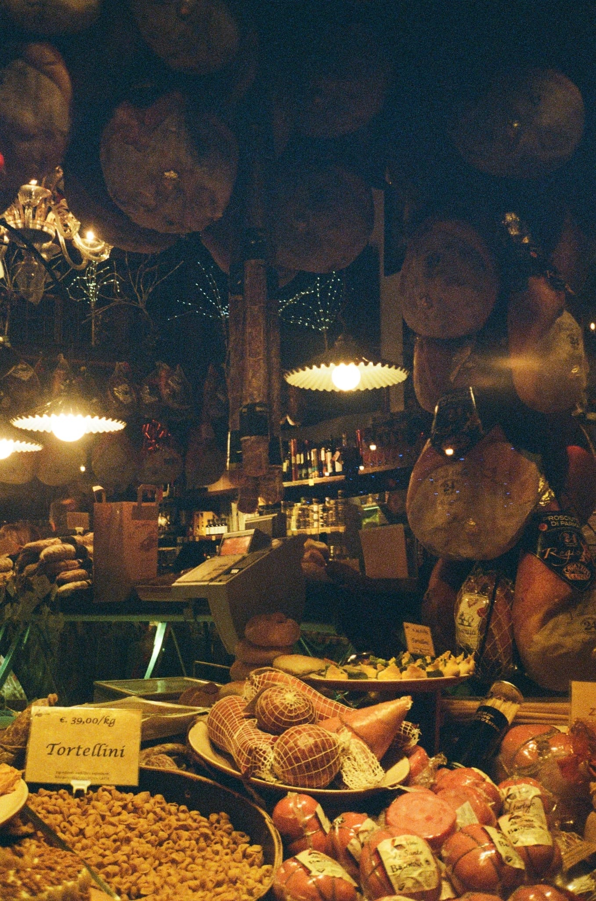

I am Gabriel


I'm a data-driven thinker with a background in Bioinformatics, recently graduated with a Master’s degree from the University of Amsterdam. I built this little portfolio site in my free time to learn some web dev and will continue to work on it as I go along. All the code can be found on my github.
Reguliersgracht, Amsterdam, 1017
Academic projects
These are a selection of academic projects I’ve completed during my studies. My work has primarily focused on mammalian biology; ranging from analyzing bacteria associated with carnivores to predicting mammalian age using DNA methylation profiles.

Bioinformatic and Biostatistical Analysis of Ancient Microbiomes @ University of Bologna, Italy
Bachelor's thesis: This project explored the evolutionary relationships between carnivorous mammals and their gut microbiomes. By comparing modern species with an extinct subspecies of hyena, it identified microbial genera—such as Lachnoclostridium, Clostridium, and Peptoclostridium—that have been preserved over time. These microbes, linked to meat digestion and gut health, support the idea that certain gut bacteria have co-evolved with their hosts and play important roles in carnivore biology.

Age prediction using mammalian methylation profiles @ University of Amsterdam, Netherlands
This project applied machine learning techniques—including linear regression, decision trees, and deep learning—to develop a pan-tissue epigenetic clock using DNA methylation data from over 11,000 mammals. The results showed that sparse linear models performed best for age prediction, identified key genes associated with aging, and revealed that some species aged significantly more slowly than others.

Mapping Region-to-Region Connectivity Across the Brain @ University of Amsterdam & Center for Neurogenomics and Cognitive Research (CNCR)
Master's thesis: This project studied how the human cortex is organised by analyzing brain connectivity patterns. Using variogram-based methods, it found that sensory areas have strong, short-range connections, while higher-order areas have weaker, long-range ones. Some key regions, like the posterior cingulate and medial prefrontal cortex, showed both. The results support the idea that brain organisation is shaped by both connectivity and spatial layout.
These photos were taken throughout my studies by both myself and my friends. I’ll be updating this gallery as I continue to add more!
Via Peschiere Vecchi, Bologna, 40124
About Me
I grew up in South Africa and spent the last few years studying abroad in Italy and the Netherlands. My background is in bioinformatics, but I generally think of myself as a data scientist with an interest in biology. Over time, I’ve found myself really enjoying the intersection of machine learning and big data, especially when it helps uncover useful patterns or insights. My projects have touched on things like genomic data analysis, brain connectivity, and mapping ecological systems. I've worked on everything from figuring out what influences bat box occupancy in South Africa to using DNA methylation data to explore lifespan prediction. I'm curious about how data can help us understand biological systems better, whether that's in research, industry, or environmental work, and I'm always up for digging into a new challenge.
Piazza della Mercanzia, Bologna, 40124